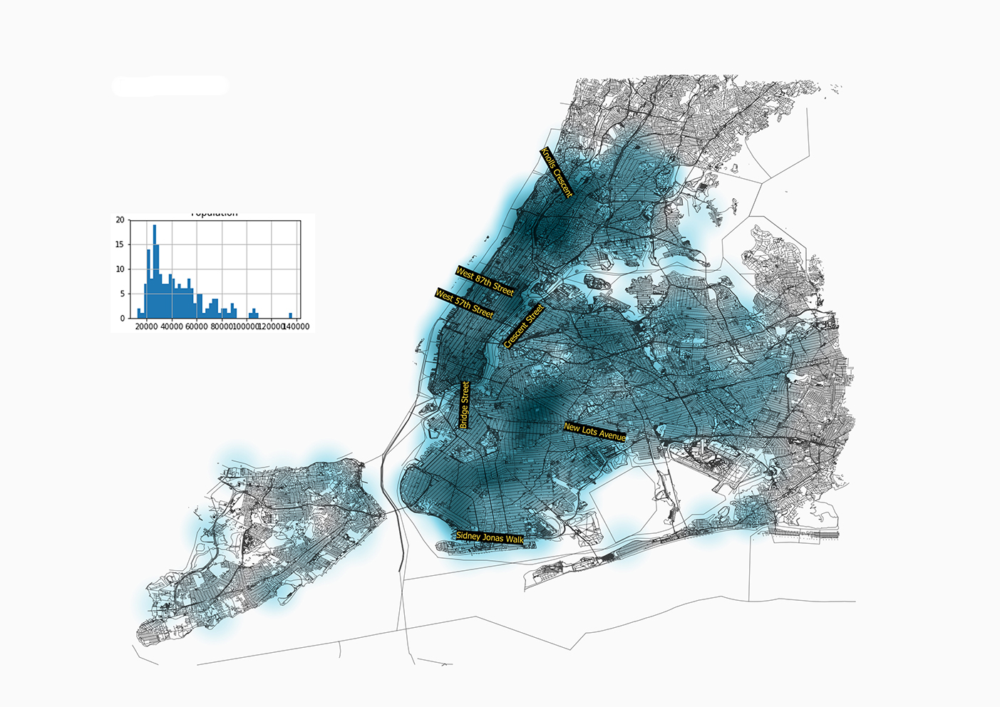
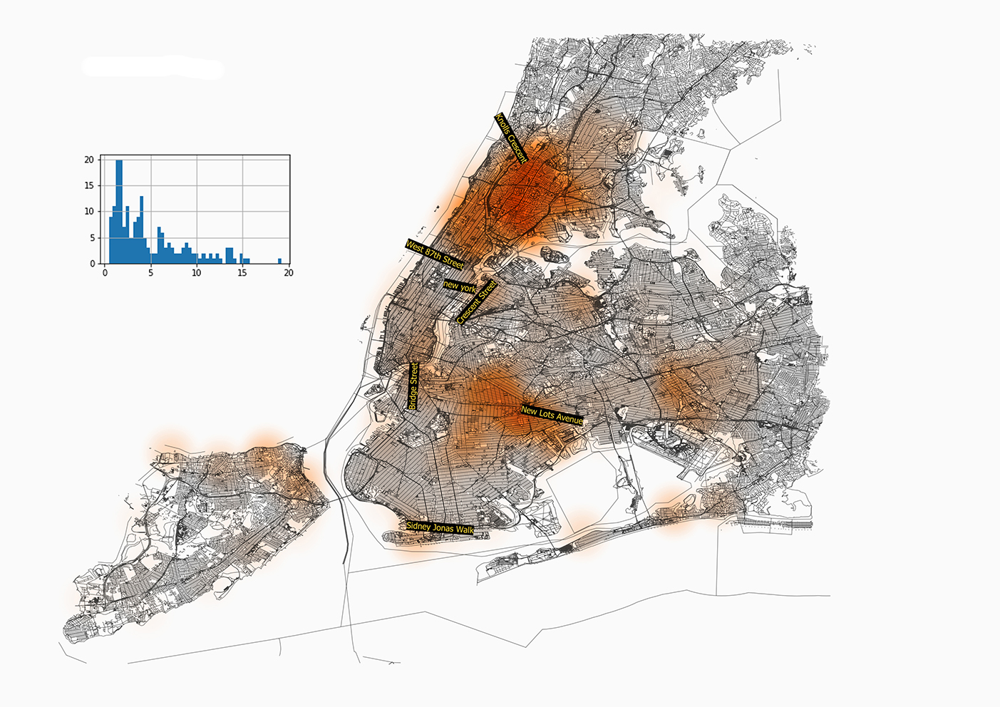

For Fates is a art project intended to collectively reimagine what a future culture of justice might be like in New York City after the close of the Rikers Island Jail Complex. The project asks people to imagine what tools, designs, and artifacts might exist to make more just communities possible. From this standpoint, they consider how these tools might actually be made a reality.
The project is based on ideation through speculative design workshops, done with a range of people affected by the justice system. The resulting designs range from the speculative to the practical. The design featured here, which was possible to instantiate in the present, was imagined by a restorative justice peacemaker at the Red Hook Community Justice Center.
This Database of Predictive Care uses algorithms similar to predictive policing to anticipate needed location-based support for mental wellness.
The main findings anticipate how facilities supporting mental health and addressing substance abuse, if increased and distributed to meet the needs of local populations, would be likely to reduce the rate of incarceration.
The first set of maps shows how the following variables are distributed
-Population
-Primary HealthCare Facility Distribution
-Drug Related Hospitalisation
-Psychiatric case related Hospitalisation
-Incarceration
Population
Primary Health Care Centers

Drug Related Hospitalisation

Psychiatric case related related hospitalisation

Incarceration
Some areas suffer from poor health and also have high incarceration rates, the skewing of the histograms, also demonstrate that there are some areas with a disproportionate value, which become easier to spot when visualised on a map
A preliminary analysis of the data yeilds the following correlation with incarceration
We run a regression algorithm on the data, and train it to correlate all the other variables, with incarceration. We will then look at varying the input variable of facility distribution, and see how it affects the Incarceration. The trained model could explain 65% of the variation in the data

We notice that in some areas, where a concentration of facilities and hospitalisations overlap, the incarceration rates are low. This lead us to try to emulate the facility density in these areas in accordance with the need.

The emulated 'Ideal Distribution of facilities', turned out to be as seen here.We then fed this into the trained regression model keeping all other variables the same and saw what changes it lead to in the incarceration pattern
The resulting incarceration rates were reduced noticeably, especially in the areas INSERT AREA NAMES HERE, as per the model.

To summarise, here are the results of distributing healthcare facilities in a manner more attuned to needs, and the corresponding change in incarceration, as per the trained regression model.

Conclusion